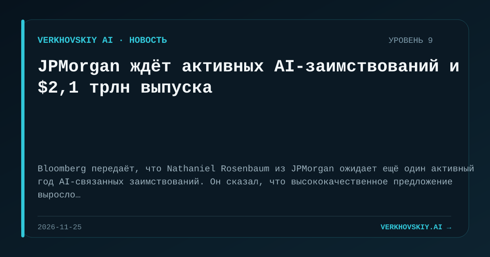

JPMorgan ждёт активных AI-заимствований и $2,1 трлн выпуска
Bloomberg передаёт, что Nathaniel Rosenbaum из JPMorgan ожидает ещё один активный год AI-связанных заимствований. Он сказал, что высококачественное предложение выросло почти в 3,5 раза в этом году, а в следующем может достичь рекордных $2,1 трлн без повторения такого скачка.